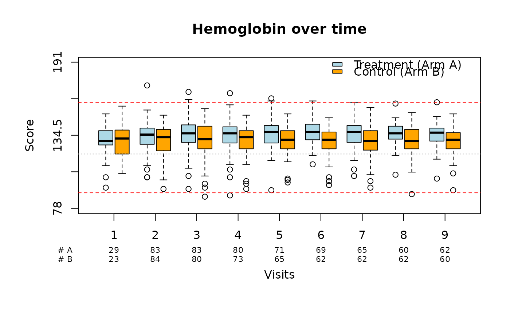

Generates boxplots over time for one or multiple sub-groups.
Usage
boxplotSCI(
data,
var,
time = NULL,
time_labels = NULL,
group = NULL,
group_names = NULL,
group_names_short = NULL,
main = "",
xlab = NULL,
ylab = "Variable",
ylim = NULL,
y_ticks = NULL,
col = NULL,
cex_lab = 1,
cex_axis = 1,
cex_n_patients = 0.7,
boxwex = NULL,
shift = NULL,
mar_custom = NULL,
xlab_line = NULL,
ylab_line = 3,
xlab_position = NULL,
lines = NULL,
lty = NULL,
col_lines = NULL,
legend_position = "topright",
legend_offset = c(0, 0),
legend_cex = 1,
legend_bty = "n",
missing_nr = 0,
color_time = FALSE
)Arguments
- data
A data frame or tibble containing the data to be plotted.
- var
Name of the column in
dataindicating the measurement to be plotted. Supports bare or quoted column names.- time
Name of the column in
datacontaining the time points of interest. The time points can be either numeric, character, or a factor. If the time points are factors, the factor levels must be in the correct chronological order for plotting. If left empty, the function will assume a single time point. If character, they need to be able to be ordered by numerical logic.- time_labels
Name of the column in
datacontaining descriptive labels for the time points. Optional.- group
Name of the column in
datacontaining the grouping variables (e.g., treatment arms). If left empty, the function will assume a single group.- group_names
A character vector containing the names of the groups to be displayed in the legend. The order must match
levels(factor(data$group)). Default isNULL, which falls back to the group names found in the data.- group_names_short
A character vector containing short names or abbreviations for the groups, to be displayed below the x-axis near the patient counts. Optional. Defaults to
group_names.- main
Title of the plot. Defaults to
""(no title).- xlab
A label for the x-axis. Default is
"Time"if there are multiple time points, otherwise defaults to"Group".- ylab
A label for the y-axis. Default is
"Variable".- ylim
The y-axis limits of the plot as a numeric vector of length 2. Default is
NULL, which adds a 10% padding buffer above and below the data range.- y_ticks
A numeric vector specifying the explicit tick positions on the y-axis. Default is
NULL, which calculates 5 evenly spaced ticks across the data range.- col
A character vector of hex colors or color names to use for the boxes. Default is
NULL, which automatically applies the SCI color palette.- cex_lab
A numeric value specifying the font size of the main axis labels. Default is
1.- cex_axis
A numeric value specifying the font size of the axis tick marks. Default is
1.- cex_n_patients
A numeric value specifying the font size of the sample size labels and numbers displayed beneath the horizontal axis. Default is
0.7.- boxwex
Scale factor for the width of the boxes. Default is
NULL, which scales the box flexibly to the size of total timepoints and groups.- shift
A numeric value indicating the distance between adjacent boxes within a timepoint cluster. Default is
NULL, which dynamically sets spacing toboxwex * 1.15.- mar_custom
A numeric vector indicating the plot margins to be used in the form
c(bottom, left, top, right). Default isNULL, which dynamically calculates spacing so that stacked sample-size rows are never clipped.- xlab_line
A numeric value indicating the margin line offset for the x-axis label. Default is
NULL, which calculates an adaptive offset based on the number of groups.- ylab_line
A numeric value indicating the margin line offset for the y-axis label. Default is
3.0.- xlab_position
Horizontal position coordinate adjustment for the sample size group headers down the left-hand margin. Default is
NULL, which auto-aligns them.- lines
A numeric vector indicating the vertical coordinates where horizontal reference lines will be plotted. Optional.
- lty
A numeric vector of length 1 or of the same length as
linesindicating the line type to be plotted. Default is1(solid).- col_lines
A character vector of length 1 or of the same length as
linesindicating the color of the reference lines. Default is"grey".- legend_position
Position of the legend box. Options include standard base R keywords (e.g.,
"topright","topleft","bottom") or manual numeric coordinate pairsc(x, y). Default is"topright".- legend_offset
A numeric vector of length 2 specifying an
insetto nudge the legend position away from plot elements. Default isc(0, 0).- legend_cex
A numeric value specifying the font and element scaling size inside the legend box. Default is
1.- legend_bty
The type of box border to be drawn around the legend. Allowed values are
"n"(transparent/no border, the default) and"o"(standard box frame).- missing_nr
A numeric or character value indicating how zero-count patient sizes on the x-axis should be displayed. Default is
0. Can also be set toNA.- color_time
A logical toggle switch enabling legacy timepoint colorization. Supports legacy use, where, for a single timepoint, multiple groups were used as "timepoint" variable. If set to
TRUE, it treats timepoints as individual categories,applying sequential coloring and rendering a matching tracking legend. Default isFALSE.
Examples
library(summarySCI)
data("hemoglobin_data")
boxplotSCI(data = hemoglobin_data,
var = hb,
time = visit_nr,
group = Arm,
group_names = c("Treatment (Arm A)", "Control (Arm B)"),
group_names_short = c("A", "B"),
# Title
main = "Hemoglobin over time",
# Col of boxes
col = c("lightblue", "orange"),
# X axis label
xlab = "Visits",
# X axis position
xlab_position = 0,
# Y axis label
ylab = "Score",
lines = c(90, 120, 160),
# Col of lines
col_lines = c("red", "grey", "red"),
# Type of lines
lty = c(2, 3, 2)
)
